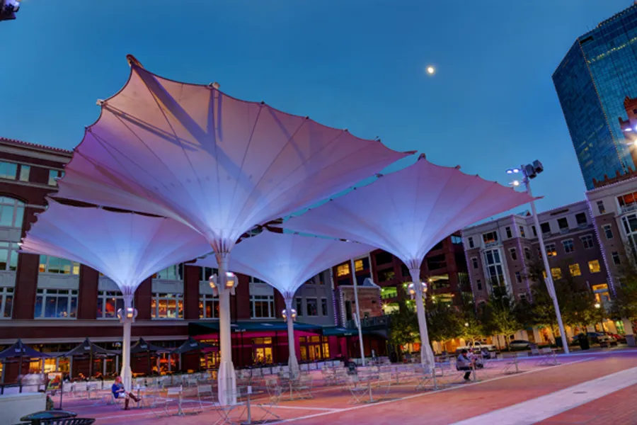

Fort Worth is the 12th largest city in the United States. As of July 1, 2023 the population is 978,468.
With the population growing by 2.2% in the past year, and 6.5% since 2020 Fort Worth will reach 1 million
people by the end of this year.
Racial and Ethnic Makeup
White Alone: (Non-Hispanic): 37%
Black (Non-Hispanic): 19%
Hispanic (All Races): 35%
Asian Alone: 5%
Other: 4%
Attractions
The Botanic Gardens is a beautiful place to be one with nature. Take a stroll through the beautiful 120-acre
campus. Enjoy the different sights and scenes from the different garden setups. Find the serenity you are
looking for in nature. A truly mesmerizing sight to see. Don't leave without stopping by.
Events
Trinity Pride Fest 2024
Saturday, June 15, 6-10pm
CHAIRS & SOCIAL PETS ALLOWED • No outside food or drink • FREE PARKING at 1201 Alston Ave
• YOUR support of our vendors helps keep this event free
BILL PICKETT INVITATIONAL RODEO
An annual celebration of African American cowboy and rodeo culture.
6/15/2024, 8/17/2024
121 E Exchange Ave Fort Worth, TX 76164
Japaneese Garden inside Botanic GardensBass Performance HallWaterfall steps inside the Water Gardens

Sundance Square in the middle of DowntownRed Goose Saloon in Downtown Fort WorthHyena's Comedy Club in Downtown Fort Worth